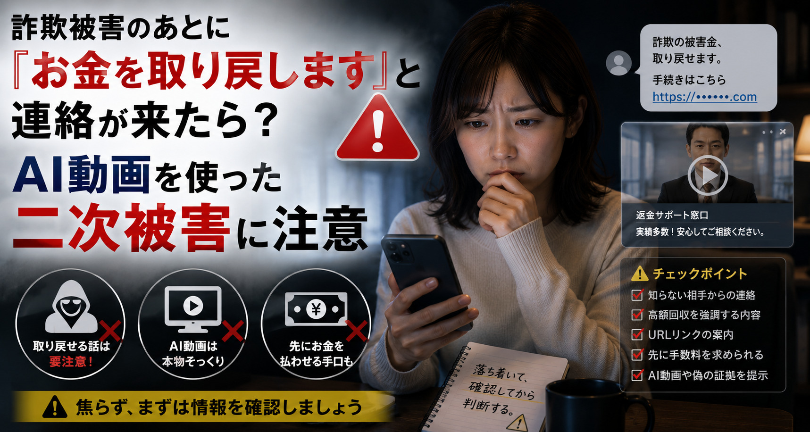

詐欺被害のあとに『お金を取り戻します』と連絡が来たら？AI動画を使った二次被害に注意
詐欺被害に遭った人へ、捜査機関や専門業者を装って『お金を取り戻せる』と近づく二次詐欺があります。AIで作られた動画や偽サイトに惑わされず、相談先を自分で確認する方法を紹介します。
- ネット詐欺や投資詐欺の被害を相談したことがある人
- SNSで被害回復サービスの広告を見る人
- 家族の詐欺被害をサポートしている人
過去の被害情報や金融情報が狙われている可能性があります。相手とのやり取りを止め、独立した公式窓口へ確認しましょう。
身近な事例を知る
SNSに『FBIや捜査機関が被害金を回収します』という動画が表示された
以前、投資詐欺でお金を失ったことがあります。SNSを見ていると、捜査機関の幹部らしい人物が『被害金を回収できます。こちらのサイトから申請してください』と話す動画が表示されました。リンク先には公的機関によく似たロゴや入力フォームがあり、氏名、電話番号、被害額、銀行口座などを入力するよう求められています。

あなたならどうする？
まず一つ以上選んでから確認してみてください。
推奨される行動- リンクを使わず、公式窓口を自分で探して確認する
選んだカードの表示を見ながら、今回はどの行動が安心につながるか確認できます。
詐欺師へ本物かどうか尋ねても、偽の証明書やAI動画を追加で送られる可能性があります。受け取ったリンクや電話番号を使わず、自分で確認した警察、金融機関、消費生活相談窓口などへ連絡してください。
確認ポイント
被害回復のための先払いを求められていないか
手数料、保証金、税金、調査費などの名目で先払いを求めるのは、回復詐欺の代表的な特徴です。
過去の被害情報を詳しく知っていないか
氏名や被害額を知っていても本物とは限りません。被害者名簿や以前入力した情報が悪用される場合があります。
リンク先のドメインは本当に公式か
ロゴや画面が似ていても、文字が一つ違う偽ドメインや広告経由の偽サイトがあります。
動画の人物だけで信用していないか
現在は実在する人物の顔や声を使ったAI動画も作れるため、見た目より連絡方法と公式情報を確認します。
現時点での見立て
公的機関らしい動画やサイトであっても、その連絡自体が正規のものとは限りません。個人情報の入力や費用の支払いをせず、自分で確認した相談窓口へ連絡してください。
安全な対処方法
安心につながる行動
- 広告やメッセージ内のリンクを閉じる偽サイトへ誘導され、個人情報や金融情報を盗まれる可能性があります。
- 公式サイトのアドレスを自分で確認する検索広告ではなく、政府機関や警察などの案内から正規の窓口を探します。
- 銀行や決済事業者へ早めに相談する支払い方法によっては、送金停止やアカウント保護が間に合う場合があります。
- 連絡内容や送金記録を保存するメッセージ、URL、振込先、日時などは、相談や被害申告の資料になります。
避けたい行動
- 回収費用や保証金を先に支払うFTCは、被害回復のための先払いを求める連絡を信用しないよう注意しています。
- 口座番号や本人確認書類を送る別の詐欺やなりすましに情報が使われる可能性があります。
- 動画に有名人や捜査関係者が映っていることだけで信用する顔、声、話し方をAIで再現した動画である可能性があります。
- 被害に遭ったことを恥ずかしがって一人で対応する二次被害は、被害を誰にも相談しにくい心理につけ込むことがあります。
AIの前向きな活用
AIを相談前の情報整理に活用する
AIに相手が本物かを最終判定させることはできませんが、相談に必要な記録を整理したり、確認項目を作ったりする用途には役立ちます。個人情報や口座情報は伏せて利用しましょう。
- 届いたメッセージから、確認すべき点だけを抽出してもらう
- 警察や金融機関へ伝える経緯を時系列で整理してもらう
- 個人情報を伏せた状態で、回復詐欺によくある特徴と比較してもらう
今回、覚えておきたいこと
被害回復を持ちかけられたら、相手のリンクではなく自分で探した公式窓口へ確認する。
情報源
- FBI Warns of Scammers Impersonating the IC3（外部リンク） Federal Bureau of Investigation 官公庁
- Threat Actors Spoofing the FBI IC3 Website for Possible Malicious Activity（外部リンク） Federal Bureau of Investigation / IC3 官公庁
- Refund and Recovery Scams（外部リンク） Federal Trade Commission 官公庁
- FBI Warns Scammers Use AI Deepfakes and Fake IC3 Sites to Re-Victimize Fraud Victims（外部リンク） Cyber Security News セキュリティ機関
誠主任からひとこと